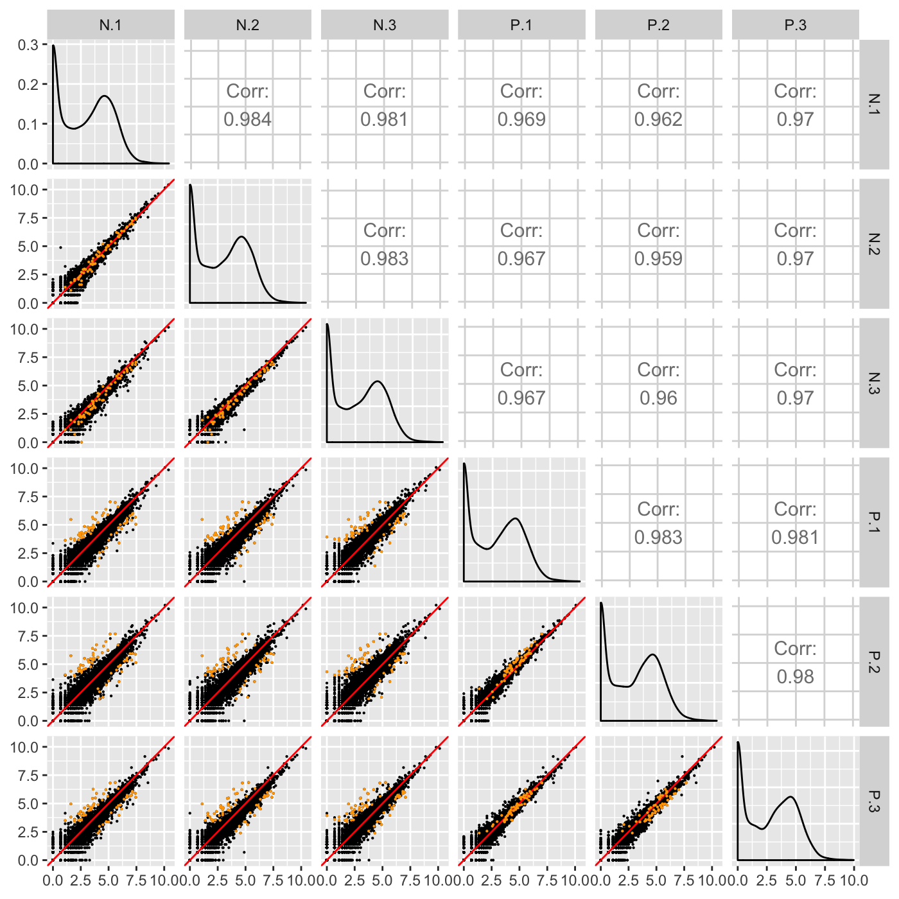
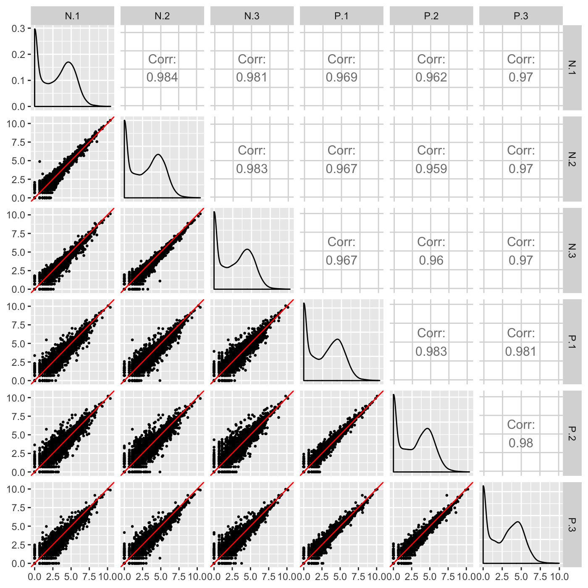

vignettes/superimposeData.Rmd
superimposeData.RmdThe bigPint package allows users to superimpose a subset of the dataset onto the full dataset. If the bigPint package is being applied to RNA-seq data, then this subset of genes is often differentially expressed genes (DEGs). Except for the plotSMApp() function, all functions offer users three options for superimposing data subsets in the bigPint package. We briefly discuss these options below.
The dataMetrics input is NULL by default in bigPint package functions. However, a user can create a dataMetrics object as is explained in the article Creating data metrics object. If a user does input a dataMetrics object, then two other input parameters will be used, threshVar and threshVal. These two inputs will be used to create the data subset from the dataMetrics input. Below are their definitions in the help files of bigPintpackage functions:
CHARACTER STRING Name of column in dataMetrics object used to threshold significance; default “FDR”INTEGER Maximum value to threshold significance from threshVar object; default 0.05Below is an example of superimposing genes that have an FDR value less than 1e-10 (Lauter and Graham 2016).
library(bigPint)
data("soybean_ir_sub")
data("soybean_ir_sub_metrics")
soybean_ir_sub[,-1] <- log(soybean_ir_sub[,-1] + 1)
ret <- plotSM(data=soybean_ir_sub, dataMetrics=soybean_ir_sub_metrics,
threshVar = "FDR", threshVal = 1e-10, pointSize = 0.1, saveFile = FALSE)
ret[["N_P"]]## Warning: Using `as.character()` on a quosure is deprecated as of rlang 0.3.0.
## Please use `as_label()` or `as_name()` instead.
## This warning is displayed once per session.We can alternatively use the geneList input object to superimpose a subset of the data onto the full data frame. The geneList object is NULL by default. However, the user can set it to be equal to the list of the IDs that should be superimposed. For example, we can achieve the same plot above by using the following code.
library(dplyr)
sigGenes = soybean_ir_sub_metrics[["N_P"]] %>% filter(FDR < 1e-10) %>% select(ID)
sigGenes = sigGenes[,1]
ret <- plotSM(data=soybean_ir_sub, geneList = sigGenes, pointSize = 0.1,
saveFile = FALSE)
ret[["N_P"]]
We note that the geneList object is more flexible than the dataMetrics object. This is because the dataMetrics object can only create the subset of data by thresholding one quantitative variable. However, the geneList object can be created in many more ways. For example, below we can examine genes that have an FDR value less than 1e-10 and a log fold change value greater than the absolute value of 6.
library(dplyr)
sigGenes = soybean_ir_sub_metrics[["N_P"]] %>% filter(FDR < 1e-10) %>%
filter(abs(logFC) > 6) %>% select(ID)
sigGenes = sigGenes[,1]
ret <- plotSM(data=soybean_ir_sub, geneList = sigGenes, pointSize = 0.5,
pointColor = "magenta", saveFile = FALSE)
ret[["N_P"]]
Because of this, if both dataMetrics and geneList are both not their default NULL value, then geneList will take priority and dataMetrics will be ignored.